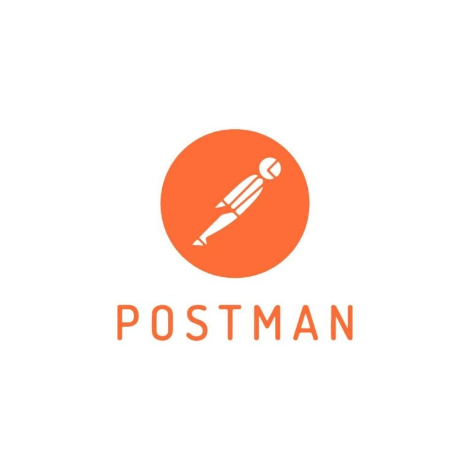
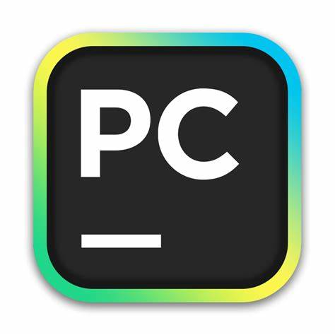
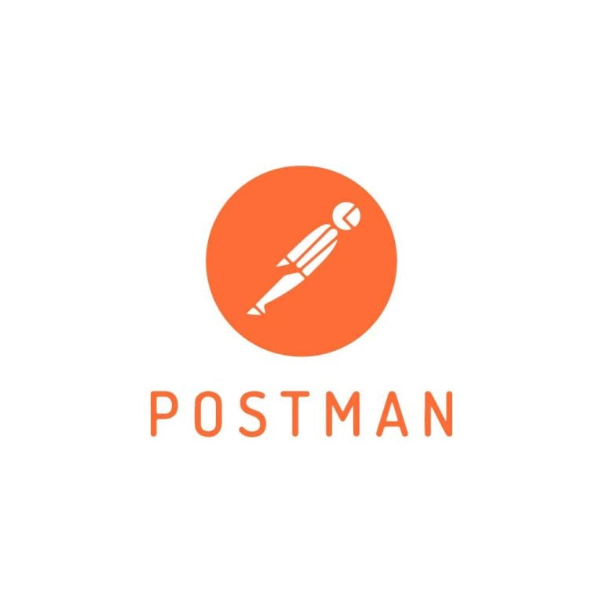
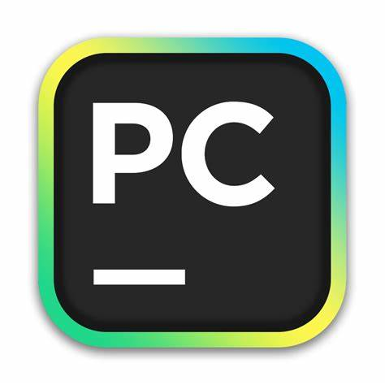

Welcome to my personal portfolio! I am a software engineer in training at Coding Temple.
On my platform, you can explore my projects, learn about my journey in software development,
and discover insights into my skills and expertise. Feel free to check out the different sections
to learn more about my work, passion, and what I can bring to the tech industry.
I am from a small town in Oklahoma, where I grew up as one of nine siblings. I am currently undergoing
training to become a software engineer at Coding Temple. My dreams and aspirations in tech include
advancing to a senior software engineer role at a FAANG company or potentially launching my own tech startup
after acquiring valuable field experience. In my spare time, I enjoy spending quality time with family and
friends, distance running, rock climbing, hiking, reading, and studying linguistics. Some of my unique skill
include proficiency in Italian, English, and Spanish.

Since embarking on my academic journey at Coding Temple I have accomplished several projects.
All of which I have uploaded on my GitHub account. View My GitHub Page Here.
Technologies Used: Postman, Pycharm, MySQL WorkBench, Flask


 





Feel free to reach out to me! You can use the contact form below or connect with me through email or my social media platforms.
You can also reach me at: scoob.ray.white@gmail.com
Follow me on social media: